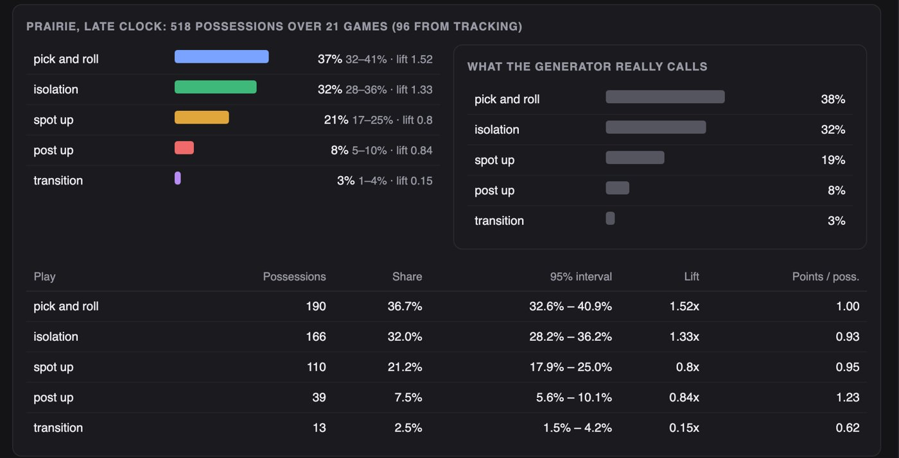
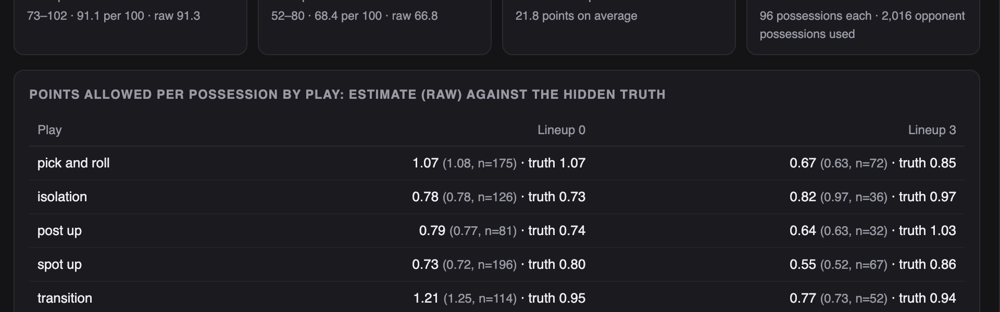

Python · Simulation · Sports analytics · 2026-10
What Does the Opponent Run When the Clock Runs Down?
A scouting system for a simulated basketball league: it names 89 of 96 plays in a match from tracking alone, learns an opponent's late-clock habits with honest intervals, simulates which defensive lineup to use, lets an analyst correct a play, and writes a report that says what it cannot tell you.

Built from a written blueprint as one vertical slice. The league is simulated: its logs and the tracking record come from a generator I wrote, which is what lets every play name and tendency be checked against the truth. There is no video: tracks are drawn, not detected, and the play rules were written for the generator's signatures, so their accuracy is a statement about the generator. No language model is used. Not built: video, detection and tracking, learned play recognition, Kafka, Terraform, single sign-on.
01 — The problem
A club gets its next opponent's last match as a tracking file: ten players and a ball, ten positions a second, no labels. An analyst wants to know what the opponent runs when the clock is low, which of the club's five-man units should defend them, and wants the clips. Scouting reports usually state tendencies as facts; with a few hundred possessions they are estimates with wide intervals. Can software name the plays, state the habits honestly, pick a lineup with its uncertainty, and take a correction when it gets a play wrong?
Blueprint 4 of fifteen in a third build book, built as its demo scenario end to end.
02 — What I built
A Python service on PostgreSQL with a background worker and a web page, started by one docker compose up.
- A simulator of a league: hidden play-calling by situation, hidden lineup defence, 80 games of logs and one match of tracking.
- Play recognition from geometry, with the evidence stored on every possession.
- Tendencies with 95% intervals, lift and points per possession; a clip search in plain words.
- A lineup simulation with shrunk estimates beside raw plus-minus and the hidden truth.
- Corrections kept for retraining, and a report that names its confidence.
03 — How it was built
- 01
One frame changed the answer
The first segmenter defined a dead ball as the ball being still at midcourt. The first frame of every dead ball is the ball jumping to midcourt, so each possession was cut one frame late, and that frame put the ball far from everyone: the rules read a pass and a long shot, and named 21 isolations spot-ups. Accuracy was 42%. Defining a dead ball by where the ball is, not how fast it moves, took it to 93%. Play recognition is only as good as the cut under it.
still = (np.abs(ball[:, 0] - 14.0) < 1.0) & (np.abs(ball[:, 1] - 7.5) < 1.0) - 02
Rules that say why
Each play is named by what the players did: a start from the back court is a transition; the ball living within 3.5 metres of the basket is a post-up; a teammate who comes within 1.6 metres of the handler and then goes to the basket is a screen and roll; a change of handler before a shot from range is a spot-up; the rest is isolation. The reason is stored with every possession, so an analyst correcting a play can see what the rules saw.
if close.min() < 1.6 and rolled and ball[when, 0] < 24.5: return "pick_and_roll", {**ev, "screen_gap_m": round(float(close.min()), 2), "screen_frame": when, "why": "a teammate came within 1.6 m of the handler and then went to the basket"} - 03
A tendency is an interval
Prairie runs the pick-and-roll on 37% of late-clock possessions. With 518 possessions that is 33 to 41 percent, and the report says so. Lift compares the situation with the team's overall habit: 1.5 times means it is a plan, not a coincidence. On three other leagues the hidden share fell inside the 95% interval 93% of the time, and splitting by situation cut the error from 6.5 points to 1.7.
c, h = (p + z * z / (2 * n)) / d, z * np.sqrt(p * (1 - p) / n + z * z / (4 * n * n)) / d - 04
Lineups play too few possessions to trust the raw number
A five-man unit's record against one play might be 36 possessions. The estimate is pulled toward the lineup's own average and the league's average for that play, by 25 and 40 pseudo-possessions, and the raw figure is shown beside it with the count. Against the hidden truth the shrunk figures are closer. The simulation then plays 2,000 games: a situation, the opponent's play, points with the mean the lineup allows. Lineup 3 allowed 22 fewer points than lineup 0; the chance lineup 0 does better was 8%.
per[p] = {"n": len(pts), "estimate": round((sum(pts) + SHRINK_PLAY * prior) / (len(pts) + SHRINK_PLAY), 3), "raw": round(float(np.mean(pts)), 3) if pts else None} - 05
A score is mostly chance
On fifteen held-out games the simulation predicted the points scored against us to within 8.1 points on average; so did raw plus-minus. A game's score has a standard deviation of about ten points on this generator, so neither can do much better. The honest claim is narrower: the shrunk estimates are closer to the hidden quality of each lineup, which is what a coach can act on. The report says this in its last section.
md += ["## What this report cannot tell you", "- Shares come with intervals; a lift under 1.2 is habit, not a plan."
04 — Results
The demo. Prairie in late-clock situations, with the generator's hidden probabilities beside the estimates:
Two lineups' estimated points allowed per play, with the raw figure, the count, and the hidden truth:

On three other simulated leagues:
| System | Simple | |
|---|---|---|
| Plays named right | 92.4% | 35.7% |
| Share error | 1.7 pts | 6.5 pts |
| In the 95% band | 93.1% | – |
| Lineup error | 0.09–0.13 | 0.14–0.18 |
| Game score error | 8.1 pts | 8.1 pts |
"Simple" is the obvious rule in each case: always naming the commonest play, a team's overall habit regardless of situation, and raw plus-minus for lineups.
Honest limits. The play rules were written for the generator's five signatures and fail only on the two variants it was built to fail on; real tracking is far messier and this says nothing about video. The lineup simulation predicts a game's score no better than raw plus-minus, because a score is mostly chance. In the demo, lineup 3's estimates ran well below the truth on three plays; shrinkage toward averages cannot fix a lineup that was simply lucky in its 36 possessions.
Checks. 13 tests, including: every possession is found by segmentation, the rules fail only on the pop and the early pass, hidden shares fall inside the intervals, shrunk estimates are no worse than raw, a file with the wrong checksum is refused, a correction changes the event and is counted, and one club cannot see another's league.
05 — What I'd do next
- Real tracking (public datasets where the licence allows) to see which rules survive.
- A learned play model trained on the analysts' corrections, which is what the correction loop is for.
- Lineups on offence as well as defence.